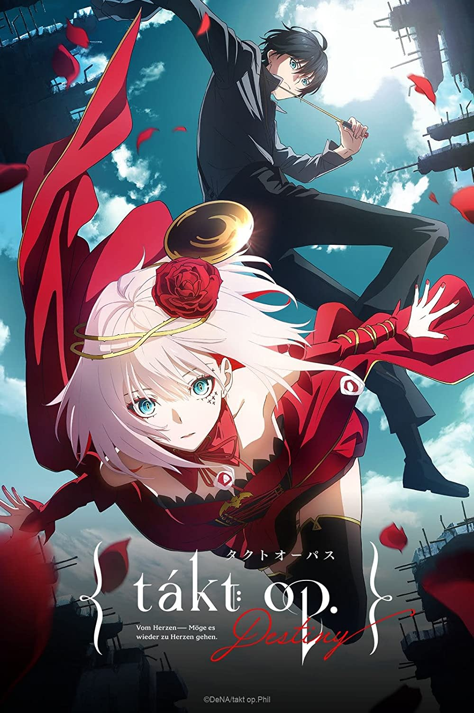

Takt Op. Destiny (Takt Op.) - Yūki Itō, Kiyoko Yoshimura

Overview & Recap
Takt Op. Destiny is a music/science fiction/action anime. It is made by Mappa/Madhouse so the graphics are really fucking good. Its set in 2047, where music cannot be played freely bc then these monster things called 'D2s' will attack you. these monster thingos came from a black meteorite that decided to yeet into the earth six years ago and they dont vibe to human music, so they try to destroy it. Takt Asahina is obsessed with playing music and along with Cossette/Destiny and Anna, they join this organisation called 'Symphonica International Organization'. Using Musicarts (these really weird splatoon lookin ass people who are basically human weapons, we love that), they defend the cities from D2s.
Review
Ok takt is REALLY FUCKING HOT LIKE THE MANS IS ALSO HELLA GOOD AT PIANO?? HES REALLY REALLY HOT OK IM SORRY BUT I WATCH THIS ANIME JUST TO SIMP LIKE THE PLOT IS REALLY BASIC AND COSSETTE FUCKING ANNOYS ME SO MUCH (THANK GOD SHE DIES SORRY FOR SPOILERS LMAO IDEC ANYMORE) AND TAKT IS REALLY HOT. ok im done. anyway, the storyline is pretty basic and kinda predictable. the characters are all really really pretty and takt is really fucking hot- ok i wasnt done im sorry. anywho there is also a game called takt op. (yea destiny get lost you piece of shit-) anyway ummm... yea ive watched it twice bc takt is so hot- MOVING THE FUCK ON OKOK UHH it does get a little said towards the end (im talking abt lenny not fucking cosette/destiny i cheered when she yeeted)
Rating
3.5 based purely on how hot takt is ok the plot is pretty basic and so are the characters but the character designs are really really good (especially takt's)